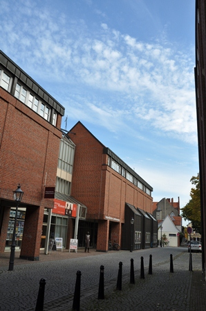
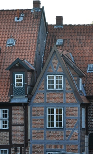
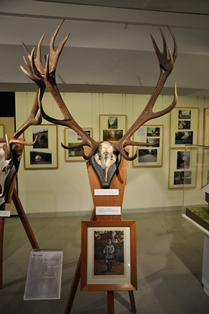
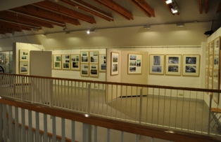
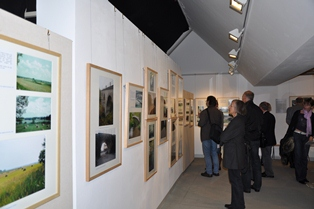
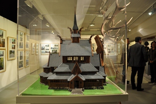
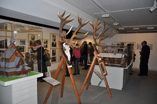
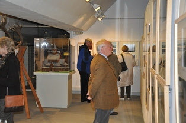

Виштынецкий эколого-исторический музей · посёлок Краснолесье
Выставка «Rominter Heide — Красный лес» в Люнебурге
«Rominter Heide — Красный лес. Лес чувств и воспоминаний в прошлом и настоящем»
12 октября 2012 года в старинном городе Германии Люнебурге в Музее Восточной Пруссии открылась совместная с Виштынецким экомузеем выставка, посвящённая Роминтской пуще.
Посетители выставки смогли увидеть цветные фотографии Роминтской пущи разных лет. Это фотографии двух авторов, двух биологов: Отто Штайнфата и Алексея Соколова, которых разделяют десятки лет.
Две эпохи в фотографиях
Отто Штайнфат был орнитологом и жил в Роминтен в начале XX века, выполнив в конце 30-х годов множество цветных снимков природы Роминтской пущи и её посёлков. Это были одни из первых цветных фотографий, которые даже сейчас воспринимаются по-современному. Его дочь уже после смерти отца передала Люнебургскому музею эти снимки.
Алексей Соколов, директор Виштынецкого экомузея, располагает большим архивом собственных фотографий, которые были сделаны за последние 15 лет. Это также снимки леса и посёлков, памятников истории и культуры, которые напоминают о былых временах и славе этих мест как императорских охотничьих угодий.
Исторические экспонаты
В центре Роминтской пущи находилась государственная резиденция, которая представляла архитектурный комплекс императорского охотничьего дома и деревянной часовни Хуберта. Оба строения были построены в норвежском народном стиле. Макеты этих зданий также были доступны для обозрения. Их специально для выставки привезли из культурного центра в Элингине.
Помимо этого посетителям были представлены трофейные рога роминтского оленя из фондов Люнебургского музея.
На открытие выставки, несмотря на вечерний час, собралось более пятидесяти человек. С приветственным словом перед её первыми посетителями выступили директор музея Йоахим Менерт, Алексей Соколов и Кристоф Хинкельман, куратор природной экспозиции музея, который также курировал и подготовку выставки.
Все, и выступавшие, и гости, за непринуждённым общением у фотографий и экспонатов говорили о том, что Роминтская пуща была и остаётся местом, будоражащим чувства, тревожащим воспоминания, местом постоянного вдохновения.
Фотографии выставки и экспонатов
Музей Восточной Пруссии в Люнебурге (Германия)

Рога оленя, добытого Вильгельмом II в Роминтской пуще в 1901 году



Макет часовни святого Хуберта




Макет императорского охотничьего дома, построенного в Роминтен в 1891 году